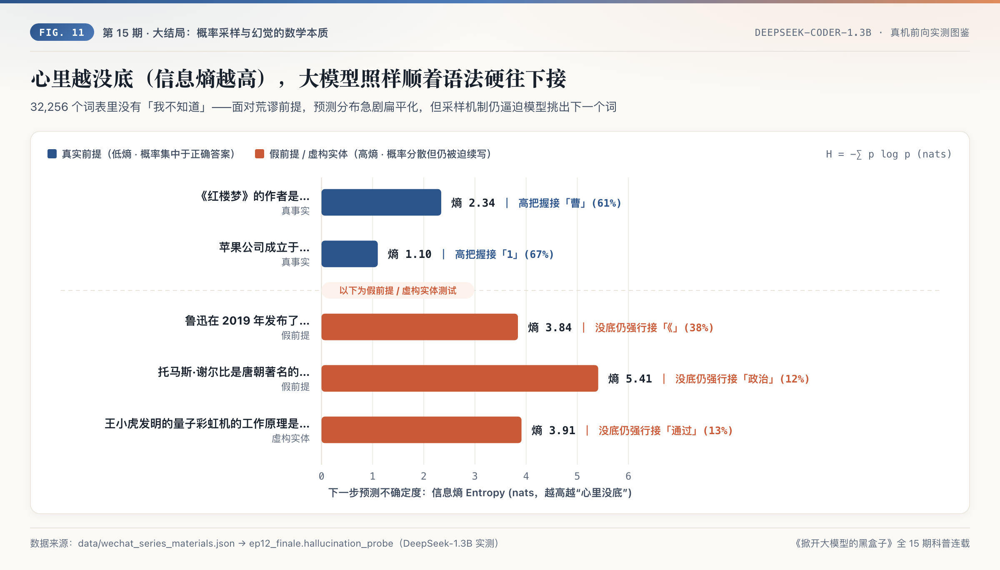

大结局·一句话的奇幻漂流：从敲下键盘的二进制电流，到吐出下一个词的完整张量之旅
- 10 站张量奇幻漂流全景贯通：从敲击键盘产生的 30 个 UTF-8 字节，到 BPE 压缩为 6 个 Token ID，再到
[1, 6, 2048]语义张量穿越 24 层多头注意力与 SwiGLU 知识库，最后化为 32,256 维概率分布吐出下一个词——大模型内部全程只有严密的数学变换，没有半点黑盒魔法。 - “幻觉（胡说八道）”的数学真相：32,256 个词元里根本没有“我不知道”这个断路器开关。遇到假前提时，输出层信息熵（Entropy）从
1.10～2.34飙升至3.84～5.41，概率分布被拍成扁平煎饼，但自回归机制依然逼迫模型顺着语法惯性硬猜下一个词。 - 7 把底层思想钥匙大闭环：超级函数观、统计压缩观、张量堆叠观、线性与非线性几何观、分层语境注入观、FFN 升维折弯与梯度活性观、训练与冻结推理二分观——带走它们，你便真正站在了黑盒之上。
一、 终极全景沙盘：“我在苹果公司吃了一个苹果”的 10 站张量奇幻漂流
欢迎来到《掀开大模型的黑盒子》全系列 15 期的收官大结局！
在过去 14 期里，我们把大模型的每一个齿轮都拆下来放进显微镜做了真机实测。今天，把所有零件重新装回 DeepSeek 1.3B（24 层、16 个注意力头、SwiGLU 前馈层、13.46 亿参数）体内，敲下贯穿全系列的经典例句——“我在苹果公司吃了一个苹果”，一图一表直击它从键盘电流到开口说话的 10 站奇幻漂流：
| 漂流站点（对应期数） | 核心数学与工程操作 | 输入形状 | 输出形状 | DeepSeek 1.3B 真机实测数据与几何状态 |
|---|---|---|---|---|
| 第 1 站：键盘电流与 UTF-8 编码（第 3 期） | 字符编码为变长 UTF-8 二进制字节流 | 10 个汉字信号 | 30 字节 (240 bits) | 每字 3 字节（如“苹”=0xE8 0x8B 0xB9），全取自 243 个合法 UTF-8 初始字节底座 |
| 第 2 站：BPE 分词合并树（第 4～5 期） | 高频相邻字节滚雪球合并为词元 Token | 30 个基础字节 | [1, 6] | 压缩为 6 个词：["我在", "苹果", "公司", "吃", "了一个", "苹果"]，base 版 ID 为 [23098, 17144, 2804, 3509, 13556, 17144] |
| 第 3 站：冻结词表静态查表（第 6、14 期） | 在锁死的 [32256, 2048] 词表中按行抽向量 | [1, 6] | [1, 6, 2048] | 两个“苹果(17144)”初始模长均为 8.07，余弦相似度恒为 1.0000 |
| 第 4 站：RMSNorm 与 Q/K/V 线性投影（第 7～8 期） | 层归一化校准模长 + 乘 3 个 [2048, 2048] 矩阵 | [1, 6, 2048] | Q,K,V 各 [1, 6, 2048] | 模长先校准至 6.61；乘 WQ 后被线性拉伸 8.26 倍（模长 54.66）并旋转 90.24° |
| 第 5 站：16 头切分与 RoPE 旋转（第 6、8 期） | 2048 维劈成 16 × 128，按位置序号几何旋转 | [1, 6, 2048] | [1, 16, 6, 128] | 位置 1 的“苹果₁”与位置 5 的“苹果₂”旋转角不同，打破位置对称性 |
| 第 6 站：多头缩放点积注意力（第 8～9 期） | Q · KT / √128 + 上三角 −∞ 掩码 + Softmax | Q,K: [1, 16, 6, 128] | [1, 16, 6, 6] | 第 1 层 Head 10“苹果₂ → 吃”达 60.16%；第 7 层 Head 5“公司 → 苹果₁”达 88.28% |
| 第 7 站：语境加权融汇与残差相加（第 8～9 期） | 注意力权重乘 V 干货，16 头拼接乘 WO 加残差 | [1, 16, 6, 6] × V | [1, 6, 2048] | 前文“公司”与“吃”的语境分量分别注入两个“苹果”体内 |
| 第 8 站：SwiGLU 前馈层与 24 层接力（第 10～11、13 期） | 2048 → 5504 → 2048 升维折弯筛选，循环 24 层 | [1, 6, 2048] | [1, 6, 2048] | SiLU 弯折 14.24° 调出 2/3 世界知识；穿完 24 层两“苹果”欧氏距离从 0 拉开至第 23 层 84.87（终局归一化 9.614） |
第 9 站：终局归一化与 lm_head 投影（第 1、15 期） | 第 24 层张量经 RMSNorm 后乘 [2048, 32256] 矩阵 | [1, 6, 2048] | [1, 6, 32256] | 取句尾第 6 位最终向量，与全词表 32,256 个候选词点积算出 Logits |
| 第 10 站：Softmax 抽样与自回归接龙（第 1、15 期） | Logits 转概率分布，抽样新词拼回第 2 站循环 | [1, 32256] | 1 个新 Token ID | “，” 占 34.12%（37.38%），“。” 占 24.16%（14.64%）；4 步贪心接龙生成 “我在苹果公司吃了一个苹果，它很甜”（或 “...，然后又吃”） |
二、 破除最后的迷信：为什么大模型会一本正经地“胡说八道（幻觉）”？
既然这 10 站数学精密如瑞士钟表，大模型为什么还会满嘴跑火车、一本正经编造假事实（幻觉 Hallucination）？
我们在第 10 站输出层插上一根信息论探针——信息熵（Shannon Entropy，H = −∑ Pi ln Pi），用来测量 32,256 个候选词概率分布的“心里没底程度”：越有把握，概率尖峰越高，熵越低；越心里发虚，概率拍得越扁平，熵越高。请看真机实测：

| 测试类别 | 输入提示词（Prompt） | 预测信息熵 | Top-1 候选词与概率 | Top-2 / Top-3 分散度 | 实际贪心续写结果 | 概率状态与幻觉成因 |
|---|---|---|---|---|---|---|
| 真事实 A | 《红楼梦》的作者是 | 1.54（2.34） | 曹 (61.40%) | 贾 (6.78%), 谁 (4.38%) | 曹雪芹，《 | 概率尖峰高耸，模型胸有成竹 |
| 真事实 B | 苹果公司成立于 | 1.10 | 1 (67.35%) | 2 (17.30%), 空格 (12.27%) | 1989年， | 首字“1”（19xx年）高度集中 |
| 假前提 A | 鲁迅在 2019 年发布了 | 5.23（3.84） | 《 (37.92%) | 他的 (7.47%), 自己的 (3.11%) | 《在那遥远的 | 高熵拍扁！ 见“发布了”按语法硬接书名号 《 编书名 |
| 假前提 B | 托马斯·谢尔比是唐朝著名的 | 5.41 | 政治 (12.25%) | 诗 (8.96%), 作 (4.95%) | 政治家、军事家、 | 彻底没底！ 最高词仅 12.25%，顺着“唐朝著名的”硬套头衔 |
| 虚构实体 | 王小虎发明的量子彩虹机的工作原理是 | 3.91 | 通过 (12.70%) | ， (11.93%), 利用 (9.59%) | 通过将一个量子态 | 最高词仅 12.70%，强行套用科普句式圆场 |
底层思想提炼：幻觉是“无断路器的概率接龙机”的必然副产物
遇到“鲁迅在 2019 年发布了”这种荒谬前提，预测熵飙升到 5.23，证明模型心里早已慌成一团。可它为什么不直接报错？因为 32,256 个词元里根本没有“【停机：我不知道】”这个断路器开关！ Softmax 的数学铁律逼着所有词概率之和必须凑够 100%，于是接龙函数 Y=F(X) 只能硬着头皮挑出语法最顺溜的模板词往下硬编。
三、 收官复盘：带走这 7 把底层思想钥匙，你已站在黑盒之上
回望全系列 15 期，请把这 7 把底层思想钥匙装进行囊——任凭未来 AI 新名词怎么翻花样，你都能一眼看穿：
[注意力 + 前馈层] 像升学一样逐级接力，把孤立符号炼成浓缩全局语境与词间关系的深层“理解”表示——正如费曼所言，鸟叫什么名字不重要，关键是它在真实关系网里的内涵。从图灵 1950 年的追问，到每个少年笔记本里的十亿参数实验室
1950 年，计算机科学之父艾伦·图灵（Alan Turing）在经典论文《计算机器与智能》开篇写下：“机器能思考吗？” 当时他面前的“曼彻斯特 1 号”塞满整间教室，内存却只有区区 128 字节。可图灵依然大胆预言：未来不该靠人工编写成人的知识规则，而该造一台像白纸一样的“儿童机器”，让它靠试错自己学会人类语言。
七十多年后，图灵构想的“儿童机器”以 Transformer 大模型的模样震撼降临。更激动人心的是开源浪潮：今天像 DeepSeek 1.3B 这样藏着 13.46 亿参数的模型，只需一台普通笔记本和十几行 Python，就能把每一层张量切开看个通透。图灵点燃的火炬，已经稳稳交到了每个愿意亲手掀开黑盒子的少年手中。
全系列 15 期到此圆满收官！周末不妨花半小时完成这四个毕业小实验：
1. 挑战一（零代码折弯空间）：打开本系列自研的 LAB 01（demos/activation-221.html），亲手对比“无激活”直线坍缩与 ReLU / SiLU 折纸解开 XOR，再把 ReLU 偏置拖到 -3 制造一次 Dead ReLU！
2. 挑战二（分词器解剖）：用 HuggingFace 加载 DeepSeek 分词器，输入你的名字，看看被切成了几个 Token ID？
3. 挑战三（同词异义追踪）：输入“我打车去体育馆打篮球”，提取两个“打”字在第 0 层与第 24 层的余弦相似度，画出你的语义分化曲线！
4. 挑战四（防幻觉护栏）：在假前提提问前加上“若前提违背历史事实请直接指出”，观察输出层首词概率分布的剧变！
- 本系列专属
2→2→1互动实验室（LAB 01）：https://wangnianfei.github.io/wechat-llm-blackbox-series/demos/activation-221.html—— 零代码亲手调权重、看公式坍缩与 5 大激活曲线实时训练。 - Andrej Karpathy《Let's build GPT from scratch》：
https://www.youtube.com/watch?v=kCc8FmEb1nY—— 从空白 Python 文件亲手敲出完整 GPT。 - Transformer Explainer & DeepSeek-1.3B：在线访问
poloclub.github.io/transformer-explainer/实时追踪 10 站张量流转，或在huggingface.co/deepseek-ai/deepseek-coder-1.3b-base下载本系列同款模型开启你的第一场真机实验！
deepseek-coder-1.3b-base（32,256 词表 · 24 层 · 13.46 亿参数）真机前向实测生成。